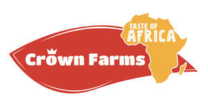

Trade Mark Journal No.2026/006 6 February 2026
UK00004327709 21 January 2026 (29,30,31)

- Class 29
- Canned fish; Fish, canned; Canned seafood; Fish, tinned [canned (Am.)]; Tinned fish; Fish, tinned; Canned meat; Meat, canned; Canned vegetables; Vegetables, canned; Frozen cooked fish; Canned pulses; Dried pulses; Processed Pulses; Canned tomatoes; Canned sliced vegetables; Cassava chips; Chicken; Chicken breast fillets; Chicken croquettes; Cooked chicken; Roast chicken; Chicken pate; Fish fillets; Chicken sausages; Frozen chicken; Chicken burgers; Chicken pieces; Fresh chicken; Cooked poultry; Steaks of meat; Cooked fish; Cooked meat; Sliced meat; Chilled meals made from fish; Coconut chips; Coconut flakes; Coconut powder; Cooked meat dishes; Cooked meats; Cooked seafood; Vegetables, cooked; Cooked vegetables; Cut vegetables; Pre-cut vegetables; Pre-cut vegetables for salads; Pre-cut vegetable salads; Deep frozen chicken; Frozen poultry; Frozen meat; Meat, frozen; Frozen turkey; Frozen fish; Frozen vegetables; Deep-frozen poultry; Frozen seafood; Frozen shellfish; Frozen meat products; Fresh poultry; Frozen meals consisting primarily of poultry; Frozen spinach; Fresh meat; Frozen meals consisting primarily of meat; Poultry meatballs; Frozen meals consisting primarily of fish; Poultry; Dried meat; Frozen meals consisting primarily of vegetables; Prepared meals made from poultry [poultry predominating]; Quick-frozen vegetable dishes; Frozen prepared meals consisting principally of vegetables; Dishes of fish; Prepared fish dishes; Fish; Fish croquettes; Steaks of fish; Fish steaks; Fish cakes; Fish steak; Fillets (Fish -); Foods prepared from fish; Prepared meat dishes; Seafood; Dried coconuts; Dried seafood; Dried fish; Dried vegetables; Meat extracts; Extracts of meat; Meat extract; Extracts of poultry; Fish balls; Fish sticks; Fish fingers; Fish, seafood and molluscs, not live; Fish, preserved; Food pastes made from meat; Foods made from fish; Frozen chips; Fish products being frozen; Frozen fruits; Frozen meals consisting primarily of chicken; Frozen sweet corn; Ground meat; Meat; Meat and meat products; Minced meat; Meat burgers; Meat paste; Prepared meals made from meat [meat predominating]; Meat products being in the form of burgers; Processed meat products; Meats; Smoked meats; Mincemeat [chopped meat]; Mixed vegetables; Peeled vegetables; Pickled vegetables; Pickled fish; Roast poultry; Poultry, not live; Shelled prawns; Grilled fish fillets; Prawns, not live; Prepared meals consisting primarily of vegetables; Prepared meals consisting primarily of meat; Prepared meals consisting primarily of chicken; Prepared meals consisting primarily of poultry; Prepared meals consisting primarily of turkey; Prepared meals consisting primarily of fish; Prepared meals consisting primarily of kebab; Prepared meals consisting primarily of duck; Prepared meals consisting principally of vegetables; Prepared meals consisting principally of game; Prepared dishes consisting principally of meat; Prepared meals containing [principally] chicken; Ready cooked meals consisting primarily of poultry; Prepared entrees consisting primarily of seafood; Ready cooked meals consisting primarily of meat; Prepared meals consisting substantially of seafood; Ready cooked meals consisting primarily of chicken; Ready cooked meals consisting primarily of turkey; Cooked meals consisting principally of fish; Ready cooked meals consisting wholly or substantially wholly of game; Ready cooked meals consisting wholly or substantially wholly of poultry; Ready cooked meals consisting wholly or substantially wholly of meat; Prepared meals consisting primarily of meat substitutes; Prepared meat; Prepared vegetable dishes; Preserved fish; Preserved meat; Preserved vegetables; Processed fish; Processed seafood; Processed meat; Processed vegetables; Processed fish products for human consumption; Processed fruits, fungi, vegetables, nuts and pulses; Salted meat; Shrimps, not live; Tinned vegetables; Turkey; Turkey meat; Turkey products; Chilli oil; Rice milk; Rice milk for use as a milk substitute.
- Class 30
- Frozen meals consisting primarily of pasta; Frozen meals consisting primarily of rice; Allspice; Nutmeg; Cardamom [spice]; Cinnamon [spice]; Cloves [spice]; Cinnamon; Cinnamon powder [spice]; Nutmegs [spice]; Ginger [spice]; Spices; Clove powder [spice]; Pepper spice; Ginger [powdered spice]; Cloves; Curry spices; Cumin powder; Edible spices; Ground coriander; Baking spices; Ginger puree [condiment]; Dried coriander seeds for use as seasoning; Blends of seasonings; Seasonings; Flavorings and seasonings; Flavourings and seasonings; Seasoning mixes; Seasoning mixes for stews; Salts, seasonings, flavourings and condiments; Stew seasoning mixes; Marinades containing spices; Peppers [seasonings]; Dry seasoning mixes for stews; Chili seasonings; Spice mixes; Dry seasonings; Food seasonings; Mixed spices; Curry spice mixes; Chili seasoning; Brown rice; Caraway seeds for use as a seasoning; Chicken pies; Chili powder; Chili powders; Chutneys; Chutneys [condiments]; Chutneys [condiment]; Cooked rice; Cooked rice mixed with vegetables and beef (bibimbap); Crackers flavoured with spices; Crackers; Curry [spice]; Curry sauces; Curry powder; Curry [seasoning]; Curry powders; Curry powder [spice]; Curry mixes; Food flavourings; Flavourings made from poultry; Foodstuffs made of rice; Meals consisting primarily of rice; Frozen pastry stuffed with meat; Frozen pastry stuffed with meat and vegetables; Frozen prepared rice; Frozen prepared rice with seasonings and vegetables; Garlic powder; Hot chili pepper sauce; Chili sauce; Hot pepper powder [spice]; Meat pies; Pies (Meat -); Meat pies [prepared]; Poultry and game meat pies; Pies containing meat; Poultry pies; Non-meat pies; Pies; Vegetable pies; Meat gravies; Gravies (Meat -); Pies containing poultry; Pies containing vegetables; Pies containing fish; Mixed spice powder; Pepper powder [spice]; Mustard powder [spice]; Prepared meals consisting primarily of pasta; Prepared meals containing [principally] pasta; Pasta-based prepared meals; Prepared meals consisting primarily of rice; Prepared meals containing [principally] rice; Prepared rice; Prepared rice dishes; Rice; Flour of rice; Rice flour; Rice dumplings; Stir-fried rice; Fried rice; Wholemeal rice; Rice crackers; Rice snacks; Puffed rice; Rice mixed with vegetables and beef [bibimbap]; Pounded rice cakes (mochi); Frozen prepared rice with seasonings; Soba noodles [japanese noodles of buckwheat, uncooked]; Rice based dishes; Spice preparations; Spice rubs; Spices in the form of powders; Spicy sauces; Sauces; Savory sauces; Savoury sauces.
- Class 31
- Fresh fruits; Fresh fruits and vegetables; Fruit, fresh; Fresh fruit; Berries, fresh fruits; Fresh citrus fruits; Fresh vegetables; Raw vegetables.
Shelim Hussain